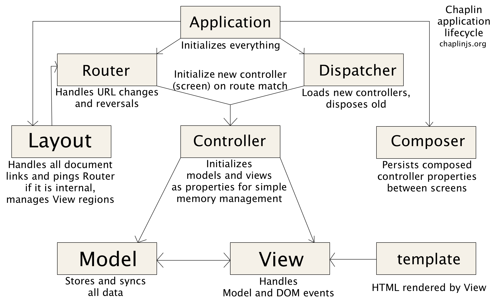

Frontend Architecture¶
Introduction¶
Client Side Architecture of OroPlatform is built over Chaplin (an architecture for JavaScript Web applications based on the Backbone.js library).
The Backbone provides little structure above simple routing, individual models, views and their binding. Chaplin addresses these limitations by providing a light-weight but flexible structure which leverages well-proven design patterns and best practises.
However, as we distribute functionality of some pages over multiple bundles (several bundles can extend a page with own functionalities), we had to extend Chaplin approach for our needs.
Technology Stack¶
- Libraries used by OroPlatform on the client side:
- RequireJS
- jQuery + jQuery-UI
- Bootstrap
- Backbone + underscore
- Chaplin
This is not the whole list, but only the main items that make the skeleton of the client.
Most of these libraries are placed in OroUIBundle (as the bundle which is
responsible for the user interface). Each of these libraries is defined
as a module in RequireJS config with short module_id, so there is no need
to use the full path every time (e.g. the module_id is jquery instead
of oroui/lib/jquery).
Naming Conventions¶
File structures and naming conventions use best practices of Backbone development adopted for Oro needs.
AcmeBundle/Resources/public
├── css
│ └── style.css
├── templates // frontend templates
│ ├── projects
│ │ ├── project-item.html
│ │ └── projects-list.html
│ └── users
│ ├── user-item.html
│ └── users-list.html
├── js
│ ├── app // code that fully supports Chaplin architecture
│ │ ├── components
│ │ │ ├── view-component.js
│ │ │ └── widget-component.js
│ │ ├── controllers // Chaplin controllers
│ │ │ └── page-controller.js
│ │ ├── models
│ │ │ ├── projects
│ │ │ │ ├── project-model.js
│ │ │ │ └── projects-collection.js
│ │ │ └── users
│ │ │ ├── user-model.js
│ │ │ └── users-collection.js
│ │ ├── modules
│ │ │ ├── layout-module.js
│ │ │ └── views-module.js
│ │ └── views
│ │ ├── projects
│ │ │ ├── project-item-view.js
│ │ │ └── projects-view.js
│ │ └── users
│ │ ├── user-item-view.js
│ │ └── users-view.js
│ │ // utility code or other kind of architectural solutions
│ ├── app.js
│ ├── tools.js
│ └── ...
└── lib // for the third party libraries
├── jquery
│ └── jquery.min.js
├── backbone
│ └── backbone.min.js
└── underscore
└── underscore.min.js
Summary
- Modules that fully support Chaplin architecture are placed in
appfolder. - There are five folders inside the “app” directory, one for each of the modules with the following roles:
components– page components, described in the Page Component sectioncontrollers– Chaplin controllers. Currently the only controller in application isPageControllermodels– folder for Chaplin (Backbone) models and collections; modules inside the folder may be grouped by their functionalitymodules– app modules, descried in the App Modules sectionviews– common folder for Chaplin views and collection views; files inside the folder are grouped by their functionality
- each file name ends with a suffix that corresponds to its type (e.g.
-view.js,-model.js,-component.js) - names of all the files and folders can contains only lowercase alphabetic symbols with minus (
-) symbol as a word separator - outside the
appfolder there is a utility code or other kind of architectural solutions (e.g. jQuery-UI widgets)
Application Lifecycle¶
Chaplin extends Backbone concept introducing missing parts (such as a controller) and providing solid lifecycle for application’s components:
As a results, a controller and all of its models and views exist only between
navigation actions. Once the route is changed, the active controller gets disposed
as well as all of its nested views and related models. A new controller is created
for the current route, and new views and models are created in the new
active controller. This approach of limited lifecycle of application components
solves memory leak issues. The rest of components, such as application itself,
router, dispatcher, layout and composer (see picture above)
exist all through the navigation.
To cover our needs we had to extend this solution. In OroPlatform a page
content is define with one bundle and might be extended with many other
bundles. This way, there isn’t a single place where a client side controller
can be defined. As a solutions, we have an only PageController constructor
used to create controllers for every url.
1 2 3 4 5 6 7 8 | // the routes module contains an only route mask
// that always leads to PageController::index action point
define(function () {
'use strict';
return [
['*pathname', 'page#index']
];
});
|
This way, the disposed and created controllers for each navigation action are
instances of the same constructor, which exist in different lifecycles of the application.
This PageController loads page content over PageModel and sends
series of system events to notify the environment that the page content has changed.
Note
- The page update flow contains the following system events:
- page:beforeChange
- page:request
- page:update
- page:afterChange
These events are handled by global views (view components that exist throughout
the navigation and are not deleted by a page change).
One of them is PageContentView that listens to page:update and updates
page content area with HTML from PageModel.
After the page:update, the active controller executes layout:init handler
that, among other things, runs initialization declared in the HTML PageComponents.
As soon as layout:init handler has finished all of its jobs, page:afterChange
event is triggered.
Page Component¶
As functionality of a page depends on its content, which is generated by multiple bundles, we cannot use a single controller responsible for it. We have introduced an alternative approach that allows the use of multiple controllers, each of which is responsible for certain functionality and related to a certain part of the HTML.
Such controllers are named Page Component. Functionally, a “Page Component” is similar to a “Controller” component in Chaplin, however it implements a different flow : “Controller” represent one screen of the application and is created when the page url is changed, while “Page Component” represents a part of the page with certain functionality and is created in the course of the page processing, subject to the settings declared in HTML.
Defining a Page Component¶
To define a PageComponent for a block, you need to define the following two
data-attributes the HTML node:
data-page-component-module– name of the moduledata-page-component-options– safe JSON-string
1 2 3 4 5 6 | {% set options = {
metadata: metaData,
data: data
} %}
<div data-page-component-module="mybundle/js/app/components/grid-component"
data-page-component-options="{{ options|json_encode }}"></div>
|
How It Works¶
PageController loads a page and therewith triggers the page:update event.
Once content of all the global views has been updated, PageController executes
the layout:init handler. This handler performs series of actions on the container
received (in our case it is document.body). One of the actions is
initPageComponents. This method performs the following:
- collect all the elements with proper data-attributes
- loads defined modules of PageComponents
- executes init method with the options received to initialize the PageComponents
- after initialization of all the components, resolves the initialization promise with the array of components
PageController handles this promise and attaches all the components received to
itself, in order to dispose them once the controller is disposed.
See also
For more details see Page Component documentation.
App Module¶
App Modules are atomic parts of the general application, responsible for the following:
- define the global view (that exist throughout the navigation)
- register handlers in the
mediator(see Chaplin.mediator), and- perform all the preliminary actions before an instance of the application is created
App Modules are not actually modules in the terms of RequireJS, as they export
nothing. It’s requirejs() call, executed right before the
application is started. It’s called App Module because it makes the whole
application modular. These modules are loaded right before instantiation
of the Application and makes the whole functionality distributed among the bundles
ready to work.
App Modules are declared in requirejs.yml the configuration file,
in the custom section appmodules:
1 2 3 4 | config:
appmodules:
- oroui/js/app/modules/views-module
- oroui/js/app/modules/messenger-module
|
This way you can define the code to be executed at the application start for every bundle.
Let’s turn to some examples:
Example 1¶
oroui/js/app/modules/views-module – declares the global views that
will be instantiated right before the “action point” method of the control is invoked.
1 2 3 4 5 6 7 8 9 10 11 12 13 14 15 16 17 18 | require([
'oroui/js/app/controllers/base/controller'
], function (BaseController) {
'use strict';
/* ... */
/**
* Init PageContentView
*/
BaseController.loadBeforeAction([
'oroui/js/app/views/page/content-view'
], function (PageContentView) {
BaseController.addToReuse('content', PageContentView, {
el: 'mainContainer'
});
});
/* ... */
});
|
BaseController has two static methods used to define what should
be done before the application starts:
BaseController.loadBeforeAction– loads required modules before the next action (or before the first action if it is inappmodule)BaseController.addToReuse– a wrapper over thereusemethod of Chaplin.Composer. This static method fills the internal array with arguments and applies them toreusemethod, when thebeforeActionmethod of active controller is invoked.
Example 2¶
oroui/js/app/modules/messenger-module – declares handlers of the messenger in the mediator
1 2 3 4 5 6 7 8 9 10 11 12 13 14 15 16 17 18 | require([
'oroui/js/mediator',
'oroui/js/app/controllers/base/controller'
], function (mediator, BaseController) {
'use strict';
/**
* Init handlers for the messenger
*/
BaseController.loadBeforeAction([
'oroui/js/messenger'
], function (messenger) {
mediator.setHandler('addMessage', messenger.addMessage, messenger);
mediator.setHandler('showMessage', messenger.notificationMessage, messenger);
mediator.setHandler('showFlashMessage', messenger.notificationFlashMessage, messenger);
mediator.setHandler('showErrorMessage', messenger.showErrorMessage, messenger);
});
});
|
This way we guarantee that all the necessary handlers are declared before they are used. The handlers can be executed by any component or view in the Chaplin lifecycle.
1 | mediator.execute('showMessage', 'success', 'Record is saved');
|
See also
For more details see Chaplin documentation and Client Side Architecture.